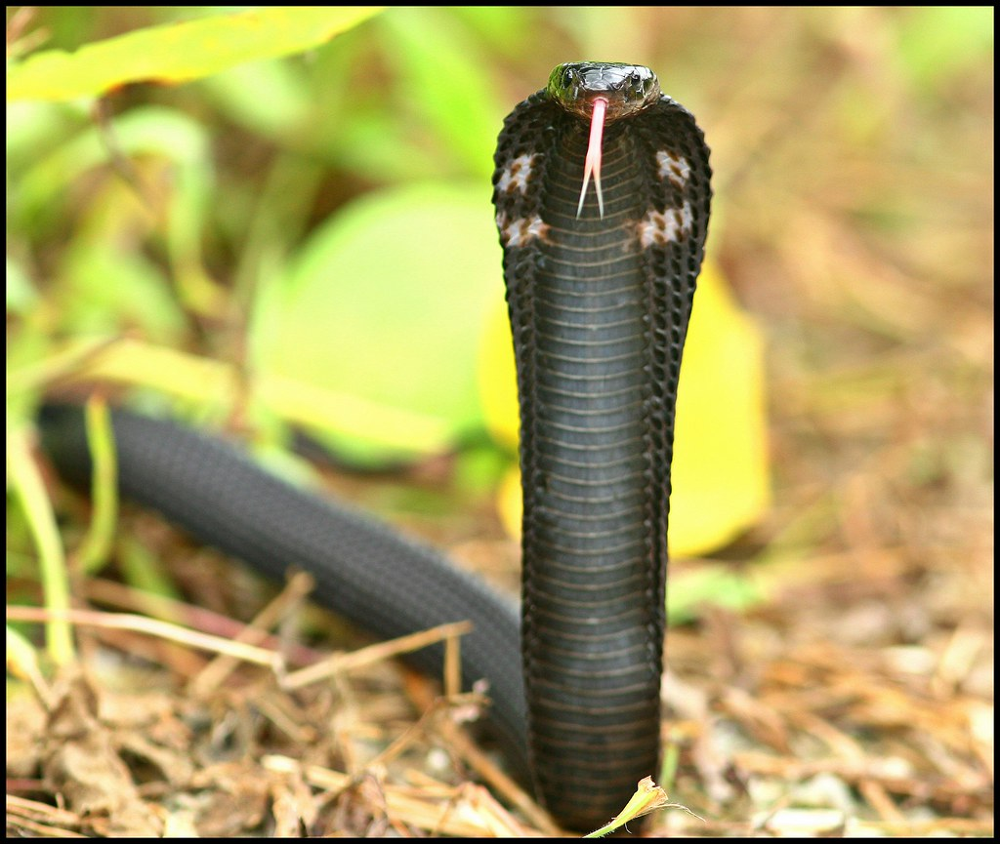

Not keen on birds? Don't fret, as Pasir Ris Park's beach and mangrove habitats is home to other animal species as well!
A word of caution. Some of these animals are to be respected and observed from a distance.
DO NOT get too close or you risk injury to yourself or the animal.
Estuarine crocodile (Crocodylus porosus)
Who knew Singapore had such large reptiles!? Some individuals are known to swim across the Straits of Johor to Singapore in search of food.
Make sure to keep clear of their path and warn other parkgoers if you spot one!
Equatorial Spitting Cobra (Naja sumatrana)
Cobras in Singapore!? Besides the King Cobra, Singapore is also home to this species of spitting cobra.
As the name suggests, they spit venom and we should keep a distance from them.
Smooth-coated Otters (Lutrogale perspicillata)
Singapore's lovely otter families can be found frolicking in the waters of Pasir Ris Park!
Previously driven out of Singapore, some have returned from Southern Johor and took up residence in the waterways of Singapore.